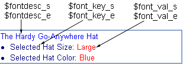
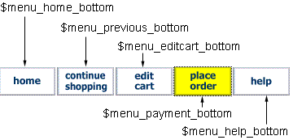

This file will help you deal with the Back End configuration file which governs Merchant OrderForm's Checkout and Final Invoicing behavior. How much or how little you want it to do can be configured by these settings. If you are completely unfamiliar with working in Perl script configuration files, then you should probably read the section All About Perl Configuration Files before you even get started.
The other documentation files are:
Thanks for your interest in Merchant Order Form v1.53.
Both configuration files in the package you received are not set like the ones on the demo sites. The demo sites have the full blown set of features enabled. We have tried to enable only the minimum settings necessary for the install, in hopes of minimizing complications during your installation. Once you are up and running and have planned your Online Store Front, then you will have a better idea of how you want Merchant OrderForm to behave.
For your reference, we've included both of Mof's configuration files as they are running on the demo sites, so you may see what settings give it that behavior. We doubt that anyone would ever run every single feature of Merchant OrderForm as we have done on the demo sites. The files are called: demo1.txt and demo2.txt in the docs folder of your package.
And relax, you have already set most of the settings you need when you did the installation. While Merchant OrderForm's configuration files are huge for Perl scripts, the typical web developer won't need many of the settings. The bulk of the configuration file settings are there to allow programmers to customize Merchant OrderForm. Almost everything from the ground up can be customized in either the configurations or in hidden customizing areas of the script libraries.
Tip:
We have tried to place the configuration details in question format.
So, find what you want to do with the configurations and we'll explain that section and how to do it.
Shareware statement
You are authorized to install, test, and explore your copy of Merchant OrderForm. When you are satisfied that it will do the job for you, then you are expected to make arrangements for the Shareware fees.
Payment arrangements @ http://www.merchantorderform.com/payment.html
-- Or you can Send Check or Money Order To:
RUSSELL ALEXANDER
1904 INVERNESS BLVD.
AUSTIN, TEXAS 78745
-- Or you can use Pay Pal
| Table of Contents for this Documentation | Merchant OrderForm v 1.53 |
Back End Settings (Checkout and Final Invoice) - mofpayment.conf
Find the questions to what you want to doVarious file locations, explanations, allowed domains
- How to allow only your domain to use the scripts
- Program file settings and file locations
- Yes, you should use the lockfile switch
- Can I change the invoice numbering ?
- What is the Affiliate Tracking Log thing ?
- Where are the template file(s) settings
- How to mail the Merchant an order notice
-- and how to transpose the cc numbers in mail- How to mail the Customer an order confirmation
- How to save a Web copy of the Invoice
- How to expire Mof's cart when order if finalized
Some Miscellaneous Settings to match the Front End
- How to change the currency symbol
- How to change the weight symbol
- How to change the delimiter used
- How to set the default email address for error messages
- Formatting for Tax Flags and Description display
- Format colors, fonts, and backgrounds in the products tables
- How to change the Navigation menus for the Back End pages
Settings for the Billing Information page
- How to Change what Bill To fields display and validate
- How to change what Receipt To fields display and validate
- How to Change what the Field tables look like
- How to Change the validation cues on the Billing Info Page
- How to Change the drop box list for Country - State in Bill To / Receipt To
All about Payment Methods
Some notes on customizing areas
| How to allow only your domain to use the scripts | ^ TABLE OF CONTENTS |
This is set in the Mof Back End configuration file:
mofpayment.conf
SECURITY SETTINGS
SECURITY SETTINGS
This setting prevents anyone from outside your domain, your Store Front, your pages from accessing the scripts and processing bogus orders. Some folks want this, some don't care. If this feature is not enabled and set, then it is possible for any form anywhere on the web to submit products to carts running under your installation of Mof. This is not a big deal with some merchants, because no damage can occur, just a bogus invoice is produced. The Merchant can usually spot this.
If you want to prevent this, then just enable the Allow Domains feature. When the setting is empty then no domain checking occurs. Enable the feature by putting a list of allowable domains that can post to your script. Go ahead and put
both versions:
http://www.yoursite.com
http://yoursite.com
When someone attempts to use Merchant OrderForm offsite then an error message is displayed with a list of allowable locations authorized to run the script, they can click on those links to view your main site.
WHAT DOMAINS ARE ALLOWED TO ACCEPT POST INPUT ?
Here's an example of enabling this feature
@ALLOWED_DOMAINS = (
'http://www.yourdomain.com',
'http://208.124.45.111'
);
You must leave it completely empty to disable the feature
@ALLOWED_DOMAINS = ();
Note: If you enable this feature, then make sure and enable it in both the Front End and the Back End scripts.
Note: The Back End processing script does not need a Post_Only setting as found in the Front End, because the Back End doesn't use any GET Query input at all, and any input on that line will trigger an error.
Adjust your <mofpayment.conf> navigation menu:
If you are using the Allowed Domains feature, then you may need to make a final adjustment with the menu functions for the back end payment processing. Under some SSL installations, the cgi Reffering_url is not present in the environment when mof.cgi is called from a process in mofpayment.cgi. It is not present at the server level of the cgi process, and therefore you will get a Domain Not Allowed message if attempting to use the "Edit Cart" function from the Billing Information page. Test this on your installation if you are using the Allowed Domains feature. If this is your case, then you should disable both the top and bottom "Edit Cart" links so they are not available on the Billing Information page.
Disable the "Edit Cart" buttons only in
mofpayment.conf
# NAVIGATION MENUS IN DYNAMIC PAGES
# NAVIGATION MENUS IN DYNAMIC PAGES
Disable both of these buttons so they do not allow a post back to the cart while on the Billing Information page
$menu_viewcart_top
$menu_editcart_bottom
| Program file settings and file locations | ^ TABLE OF CONTENTS |
This is set in the Mof Back End configuration file:
mofpayment.conf
FILE SETTINGS - FILE LOCATIONS
FILE SETTINGS - FILE LOCATIONS
This is a group of settings that define where the main program files are, where the invoice number file is, where the affiliate tracking log is, and where the output templates are.
WHAT IS THE NAME OF THE MAIN PROCESSING FILE ?
This identifies the Front End program file. This will always be mof.cgi unless you rename mof.cgi to another name. If you are running the Back End under a separate protocol HTTPS, then you will need to reference this file using the Full original HTTP URL that leads back to the Front End processing script (mof.cgi). If both mof.cgi and mofpayment.cgi are running under the same cgi-bin and same protocol, then you can simply reference the filename.
If you have to rename program files to *.pl files to be installed under an NT server. Then you will have to define the correct filename in this setting. This setting is never an absolute path. It is either just the simple filename or the full URL as this script is accessed via the Web. You can see more about SSL and Mof in the Installation Section.
WHAT IS THE NAME OF THE FINAL PAYMENT PROCESSING FILE ?
This is simply a reference to itself, running in the native directory. It is used to perform re-submit POSTs to the Back End from a Back End process already running. You should never need a URL pathway here, since the script only references itself in its native location. If you are using this in an SSL location and having trouble, then you may want to reference the Full HTTPS URL.
See the Installation section to see more about using the Back End under SSL.
DO YOU WANT FILE LOCKING TURNED ON ?
Yes, you do want to turn on File Locking, however, it can only be used for Linux-Unix servers. This setting is not NT compatible, and if you turn it on for an NT installation, then your script will crash, and will likely crash NT (not that it takes much to do that). The lockfiles switch is disabled in the distribution package to minimize installation problems. Once you are installed and tested, you should turn it on when you go live with your Shopping Cart.
$lockfiles = 0;
$lockfiles = 1;
WHERE IS THE INVOICE NUMBER FILE ?
This is the absolute location to the Invoice Numbering File. The easiest thing is to simply list the filename. You can make the filename anything you want. It is just a plain ASCII file, and you can put any starting number that you want. mofpayment.cgi uses this to increment Invoice Numbers. You can define an absolute path if you are having trouble with it, but it almost always will run in the native directory that mofpayment.cgi is running. You can place it in a different location if you want.
This is never an HTTP address.
On NT systems you must use the full absolute path to this file on your server.
On NT systems this would be something like
D:\MyWebDirectory\Cgi-Bin\filename.dat
On Linux type systems something like /home/domain/domain.com/cgi-bin/filename.dat
WHERE IS THE AFFILIATE TRACKING LOG ?
This is a plug-in add on to MOF v1.53. Do not enable this unless you have that plug-in, or unless you are using this feature to enable custom logging of orders to a log file.
The Support page at our main site has information on using this feature for custom logging. If you need information on obtaining this Plug In, then contact me at: info@merchantorderform.com
The Plug In is a Referral or Affiliate tracking system that has the ability to issue random coupon numbers with online sign up information, then activate the coupon number in real time creating a discount for any use of that coupon number for orders, which then logs all activity under that coupon number to the person issued that coupon number, and creates real money earnings for their referrals. The system also has full ability for online, Real time account management, update information, and check earning status.
| Where are the template file(s) settings | ^ TABLE OF CONTENTS |
This is set in the Mof Back End configuration file:
mofpayment.confThis is a group of settings that define where the Template files are located for the Bsck End process. You can customize what the Mof output pages look like to match your web site, call them anything you want, and locate them anywhere. You can see more information about Making Templates for your site in the Installation section, under Making Your Own Templates. There's a table there explaining the seven example templates that come in the distribution package, and what they do.
Note: These locations are Absolute pathways only, and never an HTTP or HTTPS URL address. The absolute path should lead all the way down to the actual filename and extension. You should have already set these if you went through the Installation instructions.
WHERE IS THE PAYMENT INFORMATION PAGE TEMPLATE ?
WHERE IS THE PAYMENT FINAL PAGE TEMPLATE ?
WHERE IS THE WEB INVOICE COPY TEMPLATE ?
Important : All Objects (images) in this template must have the complete Full URL. No relative addressing in this template file. The images and anything that will display on it, need to be able to reach to the complete URL address.
Remember : If you are using SSL (HTTPS) protocol for the Back End then all of the objects (images) embedded within your template files will need to be referenced via the HTTPS protocol, else you will get the message "non secure items loading" You can find a more detailed discussion of using SSL in the Installation section.
WHAT IS THE INSERT MARKER NAMED ?
This setting identifies a marker in your template files that Mof is looking for. Mof inserts its output and results at this marker. So, in building your templates put this marker where the main body of output will be. This marker
must be in the format of an html comment so that it doesn't show in your output. You can make it anything you want. Just make sure what you define here is exactly what you use as the html marker when making your templates.
| How to mail the Merchant an order notice | ^ TABLE OF CONTENTS |
This is set in the Mof Back End configuration file:
mofpayment.conf
MAILING MERCHANT
MAILING MERCHANT
This set of options enable and configure a mail plug-in that sends all finalized orders to the Merchant via an email address. This is the easiest way to receive orders from online stores. The Merchant receives an email notice of the order, and then manually processes it. If you are starting out at online ordering, then this is the recommended way to do it. You don't need to outlay the fees needed for setting up online authorization gateways until you know you're going to get the volume.
MAIL THE MERCHANT NOTICE OF FINALIZED ORDER ?
WHERE TO SEND MERCHANT ORDER NOTICES
Send Merchant Invoice by Email
- On (1) Off (0)
WHAT RETURN ADDRESS TO USE IN EMAIL
PLAIN TEXT NAME OF THE MERCHANT
MAIN WEB SITE FOR THE MERCHANT
WHICH PLUGIN TO USE FOR MAILING MERCHANT
The packaged plugin is set to use the Linux-Unix sendmail mailer. If you're on NT, then you'll need a plugin designed to mail from the various NT options. If someone wants to make one for NT, then we'll post it on our updates pages.
Note: Make sure and use single quotes only when defining email addresses because the @ will trigger an error if double quotes are used to identify the string.
There are additional settings for the Merchant mail if you want to have the Mail plug in transpose credit card or checking account numbers before it sends an order notice to the Merchant.
DO YOU WANT TO TRANSPOSE THE CREDIT CARD NUMBER ?
This is a way of encoding the cc number as it goes out in the mail. This feature only effects the email notice the Merchant receives. You can transpose either/or the first set of four digit number or the second set of four digit numbers. Select a number between 1 and 9999 for either/or both codes. If you set both codes to zero, then the sets of numbers will not be affected, the resulting cc number will be the real number.
This only encodes the cc number that is sent via merchant mail notice. The number is still the real number in the raw variable. To resolve the correct CC number add your code(s) to the appropriate set of four digits.
We provided ways to encode both the first and second sets of four digit numbers because Discover Cards use only one universal set of four digit numbers ( 6011 ). So you can chose how much coding you will do. If you didn't enable the Discover Card payment method, then using only the first set of four digits is safe. You could also opt to encode only the second set of four digits, and not the first.
Important: Do not use the same number for both settings, especially if you are Taking discover cards. Finding the answer to the first would then yeild the correct answer to the second.
You can use any digit between 1 and 9999, and Mof will adjust the set. The final encoded number that appears in the Merchant mail will have the four digit sets separated spaces, each set will have necessary leading zeros, and a minus sign will preceded a negative encoded number. If you set your code to 9999 you will obviously get a negative number, which works fine, just as long as you do the math correctly.
Example:
$code_cc_number_one = 0;
$code_cc_number_two = 0;
The cc number in the mail is the Real number
Example:
$code_cc_number_one = 3427;
$code_cc_number_two = 148;
In the example above a cc number of
4321-5678-9876-4321
will transpose to this: 0894 5530 9876 4321
Example:
$code_cc_number_one = 7019;
$code_cc_number_two = 13;
In the example above a cc number of
4321-5678-9876-4321
will transpose to this: -2698 5665 9876 4321
Example:
$code_cc_number_one = 0;
$code_cc_number_two = 9001;
In the example above a cc number of
4321- 5678- 9876- 4321
will transpose to this: 4321 -3323 9876 4321
Note: It's okay for customers to enter hyphens, etc into the cc number. The validation routine will check out the number, if it passes validation, then it is okay to transpose. The full transposed cc number that appears in the merchant mail notice is formatted with spaces between the sets of four digits, regardless of how the original number was entered by the customer.
This seems reasonably safe, and must less trouble than un-encrypting the mail from a PGP encrypted mail message.
DO YOU WANT TO TRANSPOSE THE CHECKING ACCOUNT NUMBER ?
This is similar to the cc number transposing feature above. You can set a number to be subtracted from the checking Account Number. Make this Null if you don't want to enable this feature. If disabled the checking account number will appear as the real number. This only encodes the checking account number that is sent via merchant mail notice. The number is still the real number in the raw variable. To resolve the correct checking account number add your code to the checking account number you receive in the mail.
$code_check_number = 0;
Note: this code number is subtracted from the overall checking account number, so you can make it any number you want. It is not limited to the first 4 digits.
| How to mail the Customer an order confirmation | ^ TABLE OF CONTENTS |
This is set in the Mof Back End configuration file:
mofpayment.conf
MAILING CUSTOMER
MAILING CUSTOMER
These settings enable and identify the plugin to use for mailing the customer an order confirmation. Once their order is finalized, then they will be mailed a confirmation if enabled. Mof will search for a customer email address from these fields and in this order:
Mof will send an order confirmation to the Customer with the above precedence to email address. If no Customer email address was entered, then Mof will not send an order confirmation. This will be noted on the Final Invoice.
MAIL CUSTOMER AN ORDER CONFIRMATION ?
Send
WHAT PLUGIN FOR MAILING CUSTOMER ORDER CONFIRMATION
Mof uses an external set of instructions (plugin) for mailing. You can use any external file for this. We have included the customer.mail
plugin in the package. This is a Perl sub routine. Mof grabs this and runs whatever it says to do. This file can be modified to suit your needs. You'll have to know a little bit about working in Perl to modify this
one.
The packaged plugin is set to use the Linux-Unix sendmail mailer. If you're on NT, then you'll need a plugin designed to mail from the various NT options. If someone wants to make one for NT, then we'll post it on our updates pages.
IF USING MAIL-FAX PAYMENT SHOW THIS INFO
You'll need to set up Merchant Address, Phone, Fax number, etc. to display in the Customer mail if the Mail/Fax payment method is selected or enabled. This info displays in the Customer mail as the location to contact, Phone, or Fax their order
to.
| How to save a Web copy of the Invoice | ^ TABLE OF CONTENTS |
This is set in the Mof Back End configuration file:
mofpayment.conf
SAVE WEB COPY OF INVOICE
SAVE WEB COPY OF INVOICE
Very Important: The template that makes the Web Copy of the invoice (if this feature is enabled) should always include the meta tags to prevent Robot scanning and listing in the search engines. You don't want your customer's invoice showing up at the Alta Vista search engine under their address. Our packaged template mofinvoice.html has this installed properly. If you make your own template for this function, then make sure you get this meta tag installed correctly, so that those pages, when they are created, will have a No Index, No Follow meta tag to the search engines.
<meta name="robots" content="noindex,nofollow">
When a customer finalizes their order, Mof sends a final order confirmation page back to their browser; however, this page is dynamically generated, and in reality, it does not exist except in virtual space. It does not exist on the Web site as other pages do. Enabling this feature allows that invoice to be saved as a real web page. The real Web Page appears as an exact replica of the customers final invoice order confirmation page, except that is does not have any credit card or checking account numbers, even as hidden fields, and none of the Navigation Menu Buttons appear. You can make your own custom template for this page, so the page header and footers may appear different, but the invoice information is the same, invoice number, products, pricing, etc.
Note: Under certain cookie settings, Mof will save only the most recent invoice for a particular customer. If they had a previously saved invoice, then a new invoice will overwrite the previously saved one. This will happen if they return to your site for shopping within the $holdtime_data parameters you set in mof15.conf, and if the cookie is still set for their browser. So, whether a saved invoice will overwrite an old one for a particular customer or not, depends on your cookie setting for the cart. If you want' to prevent any overwriting of previously saved invoices for this customer, then you must disable the $holdtime_data cookie by setting it to zero.
DO YOU WANT TO SAVE A WEB COPY OF THE INVOICE ?
S
ave Web Copy of the final invoice page to your web site
- On (1) Off (0)
Note: If you enable this you must set both the absolute path to Save to Disk (below), and you must set the Root URL to it's location for a Full HTTP: address (below). If you enable this then a link to it's location will be included in any Emails that are sent. Both the Customer and Merchant will receive it's URL link in the email messages.
Important : If you are installing Mof under SSL, or under split HTTP and HTTPS protocols, there is much more information on saving this Web copy and the template it uses. You should consult all the detail in the SSL section of the Installation instructions.
WHAT IS ABSOLUTE PATH TO DIRECTORY ?
On NT systems this would be something like
D:\MyWebDirectory\Cgi-Bin\\
For NT you must end with \\, escaping the use of the backslash for NT paths
On Linux type systems something like
/home/domain/domain.com/cgi-bin/
Linux can use the forward backslash / only to end string and does not need to escape the forward slash
WHAT IS THE BASE URL FOR THE INVOICES ?
Example:
$save_invoice_url = 'http://localhost/mof15/invoices/';
If the above Root URL is defined, then Mof will identify the link to the Web copy as something like this:
http://localhost/mof15/invoices/200007110041133749701.html
WHAT PLUGIN TO USE FOR WEB COPY ?
ALLOW ACCESS TO INVOICE FILES RUNNING UNDER SHARED SSL (Different UID) Unix ONLY
This is a feature fix if you are saving web copies of invoices but find that you are unable to access, delete, or edit any of the invoice files that Mof is creating. For Unix-Linux servers only, enable this switch, and when Mof creates the invoce files they will be created with shared permissions, so that you will be able to access them under your normal uid (user ID). If you need more of an explanation of this situation, then please see our main web site, support area.
$set_ssl_chmod = 0;
| Miscellaneous Settings | ^ TABLE OF CONTENTS |
This is set in the Mof Back End configuration file:
mofpayment.conf
WHAT CURRENCY SYMBOL TO USE ?
WHAT WEIGHT SYMBOL TO USE ?
WHAT DELIMITER TO USE FOR PRODUCT INFORMATION ?
WHAT EMAIL ADDR TO USE FOR ERROR MESSAGES ?
| How to expire Mof's cart when order if finalized | ^ TABLE OF CONTENTS |
This is set in the Mof Back End configuration file:
mofpayment.conf
EMPTYING THE CART
EMPTYING THE CART
When a customer completes the checkout and receives the Final order confirmation page, then Mof has several ways that it tries to update that customers cart. We want to update it so if the customer returns to shopping all the items they just purchased aren't still in the cart. So, we want to try to expire the cart, or zero out the items that were just purchased.
The most professional looking way to do this is by enabling this feature. The Installation section: Expiring Mof's cart under SSL has a further explanation of this issue. Also, there is some more information on how Mof deals with the cart under the section How to keep or not keep the cart if a purchase is not completed in the Front End Configurations docs.
# WHAT TO DO WITH CART AFTER FINAL PROCESSING ?
Enable (1) or disable (0) deleting cart contents after final invoice.
Note: mofpayment.cgi must have access to the cart files that mof.cgi created. Meaning that both scripts must be operating on the same server, and usually under the same protocol HTTP or HTTPS, but not split. If split protocols, then you may need to enable the special switch in mof15.conf for this to operate under shared SSL: $set_ssl_chmod
WHERE ARE THE DATA STORAGE FILES LOCATED ?
WHAT FILE EXTENSION IS USED FOR DATA STORAGE FILES ?
| Formatting for Tax Flags and Description display | ^ TABLE OF CONTENTS |
This is set in the Mof Back End configuration file:
mofpayment.conf
MISCELLANEOUS FORMATTING
MISCELLANEOUS FORMATTING
These settings should match what you set in mof15.conf. They are identical settings that tell Mof how to identify taxable items in the invoices and mail, and how to format the description if product options were used.
SHOW FLAG FOR TAXABLE ITEMS IN INVOICE ?
This setting tells Mof to display some flag on the invoices and email messages next to the products that are taxable. Set it to Null if you Don't want this flag displayed. Set it to a message or html based message to display. Our example prints a small gray "Tax" flag on the invoices next to a taxable item.
HOW DO YOU WANT USER INPUT TO BE FORMATTED IN "DESCRIPTION" SECTION ?
All user input is listed in the "Description" section of the invoices. You can specify if you want user input criteria to appear in a string of text or if you want user input criteria to be listed in a list. Make list formatting (1), or make one line (0). The image example below has this feature enabled. If it were disabled than the text below would be formatted in one long line.
WHAT FONT ATTRIBUTES TO USE IN DISPLAYING COMBINED DESCRIPTION ?
These six settings allow you to set the html formatting for displaying the product options input in the description section. Leave them blank for nothing. Make sure you start and stop them correctly, especially if you are coloring or bolding the string(s)

| Format colors, fonts, and backgrounds in the products tables | ^ TABLE OF CONTENTS |
This is set in the Mof Back End configuration file:
mofpayment.conf
BACKGROUND COLORS - FONT STYLES IN FINAL INVOICE TABLES
BACKGROUND COLORS - FONT STYLES IN FINAL INVOICE TABLES
The 18 settings under the SAME IN FRONT END heading are the same settings you made in the front end mof15.conf configuration file. Consult the diagram in the Front End Configurations section under How to Change colors, fonts, and backgrounds in the cart tables for where these settings work. It might even be easier to cut and past those 18 settings over as a group. They have the same variable names in both files.
$tableborder_color
contains both the border=1 and color attribute
This allows you to set overall border attributes like those MSIE dark-light bordercolors.
$returntofont
This returns everything to the font you started with in your templates
These settings are specific to the Final Invoice page
$ship_to_bg_final
$bill_to_bg_final
Our example uses image files to make the tab appearance. One is for Ship To area (left) the other for Bill To area (right)
$font_invoice_num_s
$font_invoice_num_e
$font_mailfax_form
$font_comments
| How to change the Navigation menus appearing throughout the pages | ^ TABLE OF CONTENTS |
This is set in the Mof Back End configuration file:
mofpayment.conf
NAVIGATION MENUS IN DYNAMIC PAGES
NAVIGATION MENUS IN DYNAMIC PAGES
This area has settings for all Navigation menus and links on the Back End checkout process. You can set any of the functions to show text, submit buttons, or images. Our example installation uses images. You can set each of these function with any type of HTML attribute you want.
Important: Remember if you are using the Back End under an SSL location, then any objects defined here be referenced by using the Full and complete HTTPS address.
You can set them to display text, images, or buttons. Examples:
Mof manages what function buttons and/or links are displayed for a particular page in the checkout process. You cannot change the order that functions are displayed in, or which process they are allowed to be displayed in. This is strictly managed by Mof. You shouldn't attempt to re-arrange the order of the functions in the code either, since this order is very complex, and must manage all kinds of different form input.
If you want to eliminate any of the buttons for functions, then you can make that setting Null. Mof will not attempt to display a button or function that has a Null value. While this gives you the ability to eliminate functions, be careful. You could remove functions that cause a customer to get stuck at some point in the checkout process, without a function to proceed or return.
WHAT TO DISPLAY IN TOP NAVIGATION SCHEME ?
Our distribution has these set to text links.
$menu_previous_top
$menu_viewcart_top
$menu_help_top
$menu_help_top_url
WHAT TO DO WITH BOTTOM NAVIGATION SCHEME ?
These are the settings for the bottom navigation scheme that appear on the Billing Information Page. Notice our settings point to an image, they could just as well be set to display text, or a submit button.

| How to Change what the Field tables look like | ^ TABLE OF CONTENTS |
This is set in the Mof Back End configuration file:
mofpayment.conf
BILLING INFORMATION PAGE
BILLING INFORMATION PAGE
HOW WILL INFO INPUT PAGE SECTION HEADINGS AND PAGE TEXT LOOK ?
$final_heading
$final_text
HOW WILL THE PAYMENT INFO BOXS LOOK ?
$font_outside_line
$font_left_column
$font_right_column
$font_preview_titles
| How to Change the validation cues on the Billing Info Page | ^ TABLE OF CONTENTS |
This is set in the Mof Back End configuration file:
mofpayment.conf
BILLING INFORMATION PAGE
BILLING INFORMATION PAGE
WHAT TO DISPLAY FOR VALIDATION CUES ?
You can use these settings to specify how validation cues appear on the Billing Information page. The examples in the package use:
You can use these settings to specify the URL of your own images, or you can put text messages and html attributes. You can disable any or all four of the above validation cues by putting the html <br> attribute as its setting.
Important: You must at least put the html <br> attribute in each setting or your form table may not display correctly.
$info_required
shows required fields when entering page for first time - Required
$info_okay
$info_missing
$info_incomplete
$info_message_bg
Important
: If you are running the Back End under an SSL protocol, you must address these objects with the Full HTTPS URL, otherwise, the "loading non secure items" may trigger.
| How to Change the drop box list for Country - State in Bill To / Receipt To | ^ TABLE OF CONTENTS |
This is set in the Mof Back End configuration file:
mofpayment.conf
BILLING INFORMATION PAGE
BILLING INFORMATION PAGE
These two settings allow you to define files that contain drop box data to display for State-Province or Country in the Bill To and Receipt To Fields form. If you make the setting Null, then a standard text box will display instead of a drop box. We gave the Back End its own lists, so if you use a split server then the program will be able to reference a list native to the back end.
The package examples paycountries.txt and paystate.txt go into your cgi-bin and then we just define the file name for Mof to look for to use in creating the Select Box list(s). You can make these lists from any file, call them anything, locate them anywhere. If you locate them outside the native directory Mof is running in, then you'll need to define the exact absolute path for the file(s).
Important: You must be careful to use a similar list, if not an exact list, that you used in mof15.conf for Shipping Address State and Country. If you don't, and a customer used the shortcut for entering their Bill To information, then Mof might not be able to find the matching value from the shortcut to a value in the current Back End list, and therefore, Mof would not be able to return to the correct selection in the list (if the page failed validation). The shortcut would still work correctly, but the country selected would not match the requested "shortcut" function.
The country Lists
Our packaged lists for countries are using the 208 countries listed in the USPS tables for Air Shipping, June 2000. This list of countries has long names so they appear with the full country name in all printable areas. You should not set any of the countries as the default country to be listed, but should keep the "Select Countries" as the default "selected" for this list as we have it in the package. We have also included the ISO 3166-1 country lists, which lists 238 countries by their 2 letter country code, if you want to use that list instead.
The State-Province Lists
Our packaged lists for states-provinces has all US states and Canadian Provinces listed by their 2 letter code. It also has the first value of Null, which is the default selection. This must be left as the first or "selected" option if you intend to require this field. The very next option is value=NOTINLIST>. Whenever Mof sees NOTINLIST as the submitted State-Province, then State-Province is not printed. This is to allow an international country to be selected and a Not In List selected as State, without showing some meaningless and possible confusing item to your customers printed for the State-Province. You can of course make the text appearing in the actual drop box anything you want, but you must keep "NOTINLIST" as the value if you want it to function as a non-printable item in the invoices, cart, mail, etc.
Important: If you are allowing the [ ] shortcut feature on the Billing Information page to operate, then you should only have the first Null value set as the default in both the state and country lists. If you set something other than Null as the country or state default "selected" option in these lists for the Billing Info page, and a user selects the shortcut, then the default country or state will override the Shipping Information country and state, which is not what you are probably looking for.
You can make your own Select Lists if you want, you don't have to use our examples.
Make sure you follow all the Rules for making your own lists.
WILL YOU BE USING DROP BOXES OR TEXT BOXES FOR STATE and COUNTRY ?
$use_country_list = "paycountries.txt";
$use_state_list = "paystates.txt";
| How to Change what Bill To fields display and validate | ^ TABLE OF CONTENTS |
This is set in the Mof Back End configuration file:
mofpayment.conf
BILL TO FIELDS
BILL TO FIELDS
If you are unfamiliar with the exact syntax rules for associative arrays then you can consult the section Associative array settings
WHAT BILL TO FIELDS TO DISPLAY - VALIDATE ?
Important: You cannot require any fields here that were not required on Shipping Info, otherwise you could cause validation problems when someone uses the shortcut feature.
This associative array defines what Bill To Fields you will be using, and whether to require a Field or not. Any Field Name in the Master List of Bill To Fields can be used or omitted. The distribution package is pre set with all Fields. You may want to omit some. You must have at least one field defined else the Bill To table will not display.
'Field Name', [required > 0, not required 0]
Here's an example:
%billing_info_fields = (
'Ecom_BillTo_Postal_Name_First',2,
'
This defines that two fields will display.
The First Name Field requires at least 2 characters entered, and the Middle Name Field is not required.
What is the master list of Bill To Info Field Names ?
You can have up to 14 Fields for Bill To Information.
We are using the 14 [Bill To] Fields in the ECML specs v1.0: http://www.ecml.org/
We substituted "Company" for the ECML "Line3" because they did not have company and we have user feedback that business name is important to customers.
| How to change what Receipt To fields display and validate | ^ TABLE OF CONTENTS |
This is set in the Mof Back End configuration file:
mofpayment.conf
RECEIPT TO FIELDS
RECEIPT TO FIELDS
This section works exactly as the Bill To section above, except it enables a new set of fields for Additional customer information -- the Receipt To information. This section is disabled in the package. Just enable it if you want to use it.
What is the master list of Receipt To Info Field Names ?
| How the Payment Method area works | ^ TABLE OF CONTENTS |
This is set in the Mof Back End configuration file: mofpayment.conf
There are four Payment Methods installed in ver 1.53. When you enable a particular method, then it appears in the drop down box for Payment Method on the Billing Information page. This page is ready to collect the last pieces of information from the customer before a final invoice is created. When the Place Order button is clicked, and all information passes validation, then a final invoice is created. The Billing Information page will continue to display, with validation cues (if enabled and configured), until all required information is present in the form.
When you enter the Billing Information page for the first time, it is always missing at least one piece of input -- the Payment Method. That's why Mof stops on that page instead of just skipping right past it. You can disable all the input boxes for credit card fields, online checking fields, comments, and cyber permission, and Mof will not require any of that information. But Mof will always require at least the Payment Method. You can find some information on how to bypass that page in the notes on customizing section in this doc.
You tell Mof what Payment Method options you want to allow by enabling the settings for that section You can enable-disable any combination of these options and the script will adjust the Billing Information Page according to your settings.
A positive value in any of these following settings and Mof will trigger that Payment Method. Each of these settings have their own section in the documentation below.
Note: If you enable only one method, other than the credit card method, then Mof will not display the drop box, but Mof will display a custom message stating that only one Payment Method is being accepted. If you enable the credit cart method (and at least two credit cart types) or any two methods above, then the drop box will display. Basically, the drop box will display with two or more methods.
| Enabling credit cart options | ^ TABLE OF CONTENTS |
This is set in the Mof Back End configuration file:
mofpayment.conf
ENABELING CREDIT CARD
ENABELING CREDIT CARD
This section allows you to set which credit card types will display as payment methods, which credit card fields to display for input, whether you want to validate the number, and if you want to encode the number.
WHAT CC FIELDS TO DISPLAY ?
This is an associative array that works just like the Shipping Fields, Bill To, and Receipt To fields. You must declare what fields to display for credit card input and what the validation rule is for that field.
'Field Name', [required > 0, not required 0]
Here's The example in the package:
%credit_card_fields = (
'Ecom_Payment_Card_Name',4,
'Ecom_Payment_Card_Number',4,
'Ecom_Payment_Card_ExpDate_Month',1,
'Ecom_Payment_Card_ExpDate_Year',4
);
This defines that four fields will display.
The Card Name and Card Number which require at least 4 characters to validate.
The Expiration Month which requires at least one number to validate
The Expiration Year which requires at least 4 characters to validate
What's the Mast list of cc field names ?
You may enable any of the above field names to display in the cc info boxes for input. These are the ECML v1.0 Field Names for credit card input.
Important: The ECML field name for Card_Type is not in the list above. You cannot use it for input, because it is used in the drop box to display card type. Mof reserves this name and uses it only if the Payment Method selected is
a CC type. The ECML field standard is:
Ecom_Payment_Card_Type
WHAT CC TYPES WILL YOU BE USING ?
You must declare what cc types you want to include in your Payment Method drop list. If at least one field above is enabled then Mof will assume that you want to list cc types for selection. Which ones should Mof list, and in which order do you want them listed.
You can use any combination of 8 cc types, which are listed below. List each type to use by it's code in the Master List, and list the cc types to use in the order you want them listed in the drop box.
Example: All 8 cc types are listed in the package.
@credit_card_list = ('VISA','MAST','AMER','DISC','DINE','JCB','CART','AUST');
But if you only wanted to list standard:
@credit_card_list = ('VISA','MAST','AMER');
What is the Master List of CC types ?
Note: You must use only the acronym we have assigned in the Master List to enable that cc type.
Note: If you want to include a special type of cc not listed above like company card, then you will need some minor customizing in the library file. You must account for the new type in the sub routine that builds payment options (BuildPaymentOptions) in the library. Then Mof will be able to recognize it. You will also have to modify the cc validation routines to recognize that type of numbering system. The validation routine is set up to recognize only the above listed 8 cc types.
USE CC NUMBER ALGORITHMS TO VALIDATE ?
Enable (1) or disable (0) this feature for validating credit card numbers. This is not a real time validation to determine if the number is active, only a pretty good validation to see if it passes the rules for issuing credit card numbers.
If you are using the Mof Final processing script with an API to an authorization service, then you may want to disable this. It's okay to enable it for real authorization services too. That would be an extra check for the customer.
If you do not use this, then the only validation is for length of the string entered for cc number as identified in the above array.
If the number does not pass validation then Mof will display a message with exactly what is wrong with the number.
| Enabling online checking options | ^ TABLE OF CONTENTS |
This is set in the Mof Back End configuration file:
mofpayment.conf
ENABELING ONLINE CHECKING
ENABELING ONLINE CHECKING
Same rules as building the credit card fields. Declare what fields to display for collecting checking account information input and what the validation rule is for that field.
'Field Name', [required > 0, not required 0]
You must enable these fields to use Online Checking. If you enable these fields and also enable the Mail or Fax Payment options, then the Checking Account fields will display as you have them set here. If only want to use Mail or Fax in payment as a method, then do not enable any of the Checking Account fields here.
What's the Master List of available Checking Field Names
Note: You must use only our field names above. That is how Mof is set to name these fields. We did find any ECML standard for checking account information, so we made out own names.
WHAT CHECKING FIELDS TO DISPLAY - VALIDATE ?
This setting is disabled in the package. Here's an example on how to enable all available fields.
%checking_account_fields = (
'Check_Holder_Name',4,
'Check_Number',2,
'Check_Account_Number',6,
'Check_Routing_Number',8,
'Check_Fraction_Number',4,
'Check_Bank_Name',2,
'Check_Bank_Address',2
);
| Enabling Mail or Fax in option | ^ TABLE OF CONTENTS |
This is set in the Mof Back End configuration file:
mofpayment.conf
ENABLING MAIL OR FAX
ENABLING MAIL OR FAX
DO YOU WANT TO ALLOW MAILING OR FAXING PAYMENT ?
Enable (1) or disable (0) Mailing or Faxing payment
This just adds an extra option for Payment Methods. It provides an alternative to any online payment, so someone can just print the invoice and mail in payment along with a copy of the final invoice.
You can enable any of the %checking_account_fields above to work with this option, follow rules for required fields. If you use any of the %checking_account_fields for this option, then you probably do not want to make the fields required fields.
Note: You cannot enable any of the %checking_account_fields above if you want to force the Mail or Fax in option as the only Payment Method available. If you enable any %checking_account_fields Mof thinks you want Online Checking as a Payment Method.
Note: If you have both Online Checking fields enabled and mail or fax payment enabled, then Mof will allow any input from the checking account field(s) input to display. What does that mean ? It means if both area enabled, but a customer selectes mail or fax payment, then enters some checking account informatin in those fields, then Mof will accept the input and print it in the appropriate Mail or Fax lines to be printed.
IF MAILING-FAXING ALLOW LINES TO PRINT ?
These are lines that print to be filled in by customer if selecting Mailing or Faxing in payment. If you are not allowing CC or Check as a payment method then you do not want these lines printing on a printed invoice or web copy.
$allow_lines_credit
$allow_lines_check
Print lines for checking account info for Mail or Fax method ?
| Enabling the PayPal option | ^ TABLE OF CONTENTS |
This is set in the Mof Back End configuration file:
mofpayment.conf
ENABLING PAYPAL
ENABLING PAYPAL
These settings allow Mof to display a link to the PayPal Web Accept feature. This is a simply web link with the information that PayPal needs to trigger the Web Accept input. Mof simply passes some information about Merchant name, the
Merchant's PayPal ID (email login), the final amount, a return page. Simply turn it on with the main switch $enable_paypal, and then adjust all the settings for your PayPal information.
DO YOU WANT TO USE PAY PAL AS A PAYMENT METHOD ?
$enable_paypal = 0;
$enable_paypal = 1;
This is on
Note: When you enable PayPal then it appears as a payment option in the Mof Billing Information page. You can use it as one of several payment methods in Mof, or as the only payment method.
SET THE WEB ACCEPT URL
This is the Web Accept URL. Don't change this unless PayPal reconfigures the way they use the feature. This is set by PayPal. Make sure to use the final /
$paypal_url = 'https://secure.paypal.x.com/xclick/';
WHAT IS YOUR PAYPAL EMAIL ID ?
Must match your business or premier account ID
YOUR MERCHANT NAME
WHAT URL TO RETURN TO AFTER PAYPAL ?
Where to return when PayPal is complete. This can be any url on your site. Make a Thank You page if you want. If you are using the Web Copy of the Mof invoice (below) as the return url, then leave this blank
USE WEB COPY OF INVOICE AS RETURN URL ?
Important: You MUST have save_invoice_html enabled above for this to work
WHERE IS THE PAYPAL BUTTON ?
Note: This is an HTTPS url if using SSL
| Enabling the comments box & Cyber Permission | ^ TABLE OF CONTENTS |
These two switches simply enable or disable using the comments box, or the Cyber Permission feature on the Billing Information page.
Note: The Cyber permission only triggers for validation if online checking or credit card are selected as a payment method. Even if this feature is enabled, a Yes answer is not required if the payment method is either Mail - Fax payment, or use
PayPal Web Accept. These two payment methods don't collect any important information.
DO YOU WANT THE SPECIAL INSTRUCTIONS / COMMENTS BOX ?
DO YOU WANT TO REQUIRE A RADIO BUTTON FOR FINAL APPROVAL ?
Do not enable this if you are only using Mail or Faxing in Payment or only using PayPal Web Accept. MOF will override this if other Payment Options are enabled and the customer selects Mail or Faxing in Payment, otherwise Mof will require a radio button to be selected for approval
| Some tips on customizing | ^ TABLE OF CONTENTS |
Merchant OrderForm was built to allow easy access to its processes and code for programmers. Perl programmers and even Perl script hackers will know what to do. Here's some tips on how to get started.
There are three lists in the docs section of the package that itemize all of Mof's global variables at different points. These lists are provided for programmers who need a reference to available variables for different points in Mof's processes.
Front End Variables.html
This list contains all the global variables that are available when the Order Summary (Preview Invoice) process is complete. When the Order Summary page displays, Mof is set to POST all these variables to the next process (mofpayment.cgi). A programmer could easily take any or all of these variables, which is all pertinent information needed for a complete invoice preview, and they could set up any kind of alternate POST to any other script desired.
Final Invoice Variables.html
This list contains all the global variables that are available when Mof finalizes the invoice. All of these variables are available to any plugin that Mof uses. Both of the mailing plugins in the package use these variables, and the plugin that creates the Web copy of the invoice use these variables.
Computations.html
This list is a little more complicated. This list has all the variables that accumulate as Mof makes its way through the various computations. The list shows the order of variables that are available to each successive computation. For example, if you were coding a custom shipping computation, then you would have results from all the variables preceding it in the list.
| About Mof's built in customizing areas | ^ TABLE OF CONTENTS |
Probably the most frequently used custom code in Mof is the default shipping computation. Both the user selected shipping method and the default shipping method, as well as the default discount and handling charges, can be set to defer to a custom computation. When you set any of these setting to call a custom method of computation then Mof defers to an area of code in the library file where you can make your own computation, as complex or as simply as you want. We have some custom examples already installed in the Mof library where computation happen. The examples will give you an idea of how to plug in your own code for shipping, discount, and handling computations.
For the Default Discount:
@use_discount = ('custom');
in
mof15.conf
In the library file:
mof15_lib.pl
CUSTOM DISCOUNT ------------>
Around LINE
1489 see these comments
Variables Available -------->
What the code says to do is this:
Your computation must return two global variables:
Return: $discount
Make: $Computations{'Primary_Discount_Status'} = "display message"
The Discount example above will give you an idea of where to go and how to find these built in custom computations. Here's the location for the shipping and handling
For the Handling Charge
@use_handling = ('custom');
in
mof15.conf
In the library file:
mof15_lib.pl
CUSTOM HANDLING ------------>
Around LINE
1675 see these comments
Variables Available --------->
For Custom Insurance Charges
%use_insurance = (
'NO Do Not Add Insurance',0,
'YES Add Insurance Please',1000000
);
In the library file:
mof15_lib.pl
Around LINE
1731 see these comments
For the Default Shipping Charge
@use_shipping = ('custom');
in
mof15.conf
In the library file:
mof15_lib.pl
CUSTOM DEFAULT SHIPPING ------------>
Around LINE
1942 see these comments
Variables Available (local) -------->
For the User Selected Shipping Charge
%method_mode
= ('method key','custom');
in
mof15.conf
In the library file:
mof15_lib.pl
Around LINE
2144 see these comments
CUSTOM USER SELECTED SHIPPING ---------------------->
Note: This area requires that you also set up the appropriate branch logic for any of the %method_mode keys that trigger a custom computation.
| Bypassing the Payment Method page | ^ TABLE OF CONTENTS |
This is a little trick that requires some minor code adjustment. If you are only using one payment method, say for example, you only want to allow Mail or Fax payment, or the PayPal Web Accept method, and you don't want to collect any other information like Billing Address, Receipt Address, Comments, then you can trick Mof into bypassing the Billing Information page.
By default, when you click the "checkout" button from the Order Summary page, the Billing Information page will always trigger, because it it at the very minimum looking for the Payment Method for user input. So, even if you only have one payment method enabled, Mof will stop on this page to set up the hidden input for that one payment method.
If you submit that Payment Method as hidden input from the Order Summary POST, and don't have any other fields set to display or validate on the Billing Information page, then Mof will bypass that page, because Mof will be looking for at least that one variable, and when it finds it, and nothing else is needed, then Mof will proceed directly to the Final Invoice as if you submitted everything from the Billing Information page.
Example: Let's say you were using PayPal only, and not collecting any Billing Information, but wanted to proceed directly to the Final Invoice, to display the PayPal button ..
In mof.cgi around LINE 1703 see comments:
PAYMENT CENTER POST
PAYMENT CENTER POST
See the area where Mof sets up all the hidden POST input to submit to the next process. You'll need to include the payment method as hidden input.
print "<input type=\"hidden\" name=\"input_payment_options\" value=\"PAYPAL\"> \n";
Submit this name=value for PayPal
print "<input type=\"hidden\" name=\"input_payment_options\" value=\"MAIL\"> \n";
Submit this name=value for Mail Fax only
Here's the full list of values for that field name:
<select name="input_payment_options">
<option selected value="">Please Select Here
<option value=""> ------------------------------
<option value="VISA">Visa Credit Card
<option value="MAST">Mastercard Credit Card
<option value="AMER">American Express Credit Card
<option value="DISC">Discover Credit Card
<option value="DINE">Diners Club Credit Card
<option value="JCB">JCB Card
<option value="CART">Carte Blache
<option value="AUST">Australian BankCard
<option value="CHECK">Online Checking Draft
<option value="MAIL">Mailing or Faxing Payment
<option value="PAYPAL">Using PayPal Service
</select>
Also, you will need to turn off all settings in mofpayment.conf that will trigger the Billing Information page to display. In other words, you can't expect to bypass the Billing Information page if your config file is telling Mof to stop and collect Billing info fields, the comments box, the cyber permission, etc. Mof will do as you say, even though it already knows the "hidden" Billing Method as set above in our little trick, it will still stop and attempt to collect any other info you are telling it to collect. All of the following settings must be set to off in mofpayment.conf
%billing_info_fields = ();
%receipt_info_fields = ();
%credit_card_fields = ();
@credit_card_list = ();
%checking_account_fields = ();
$mail_or_fax_field = 0;
$enable_comments_box = 0;
$enable_cyber_permission = 0;
| How to obtain more customizing information | ^ TABLE OF CONTENTS |
Our two examples above are just some ideas on how Mof can be customized. We will try to keep additional information on customizing Mof on our main web site support pages . We will try to keep some custom shipping computations as we develop them, or as others develop them and send them to us.
Written and produced by RGA@IO.COM
/ http://www.io.com/~rga/scripts
What do you want
to order today?
Documentation prepared July 31, 2000
Thanks for your interest in
Merchant
Order Form
v1.53 J
Explore the Internet - Create the Internet
These programs are distributed as Trial Ware or Share Ware. You are Welcome to install and test all portions of the programs. The package is not limited in any way and code source is left readable. Please make arrangements for the fee if you
continue operating it on a Web Site. Feel free to contact me if you need special arrangements for use of MOF v1.53.
For payment arrangements: http://www.merchantorderform.com/payment.html
For personal web site use: $ 15.00
For web development (3-10 sites): $ 45.00, includes limited support
For web development (above 10 sites): $ 150.00, includes limited support
Note: For Resale or hosting license please contact rga@io.com
Distribution of these programs and files without owner consent is prohibited. Please contact the authors of this product for any use outside the original registration and user license.
COPYRIGHT NOTICE:
The contents of these programs and scripts are protected under the United States copyright laws as an unpublished work, and is confidential and proprietary to Austin Contract Computing, Inc. Its use or disclosure in whole or in part
without the expressed written permission of Austin Contract Computing, Inc. is prohibited.
DISCLAIMER:
By opening and configuring this for your server and application you thereby assume any and all responsibility for the use and outcomes of this program. Please read the documentation on configurations, and test your installation thoroughly.
Please do not distribute this script, as it is not a free-ware version. Please direct any non registered users of this script to the author's Web Site for details on how to obtain a registered copy of this script.
Web: Merchant OrderForm v1.53
Mail: info@merchantorderform.com
Austin, Texas
July 31, 2000